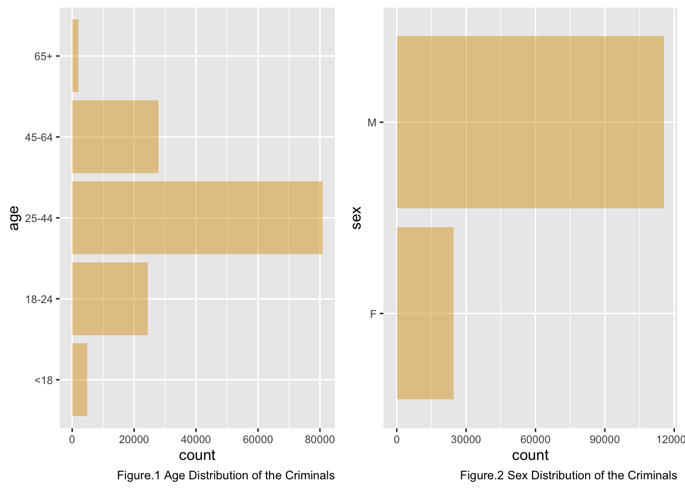
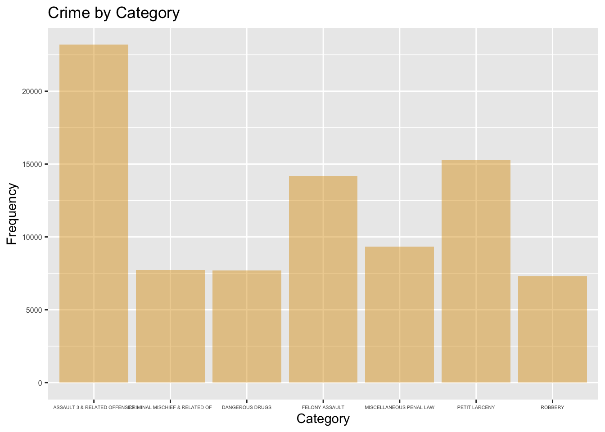
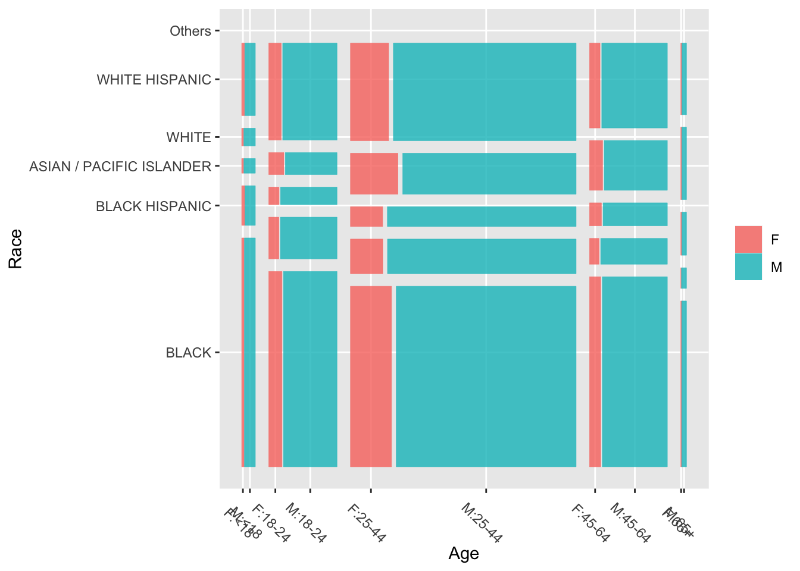
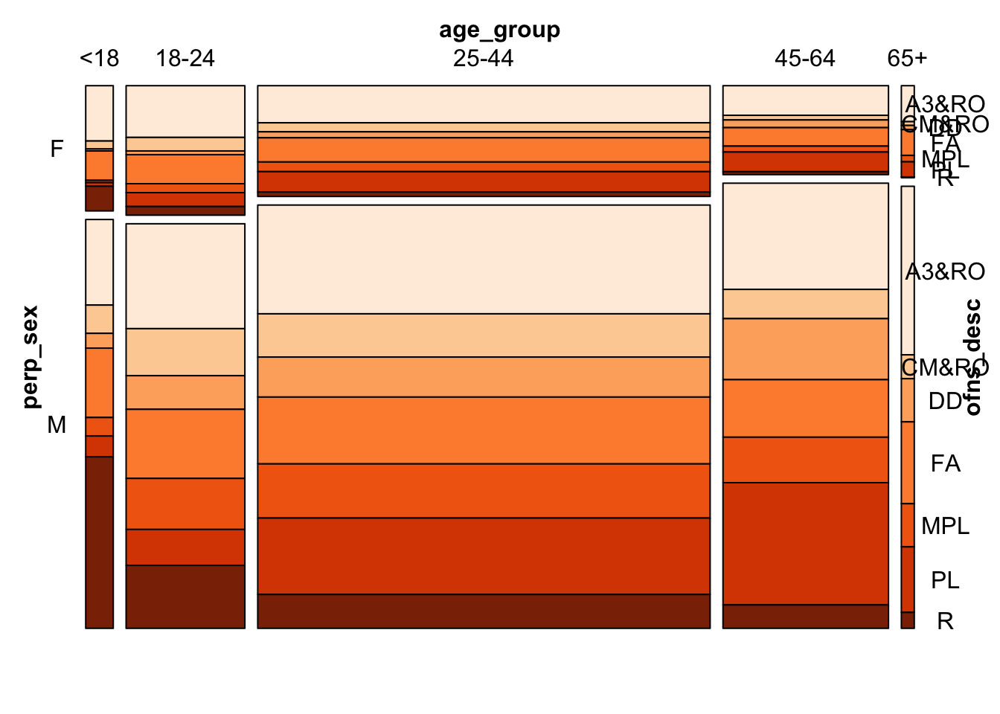
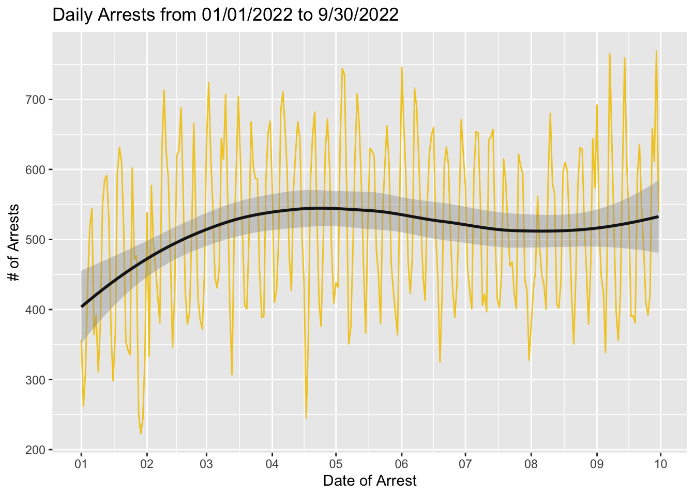

Chapter 4 Results
4.1 Criminals’ portrait
We start to analyze the crime pattern with plotting the criminals’ portrait.
With the arrest records, we plot the basic information (age, gender and race) for all arrestees. Then we could depicting the portraits for those criminal group.


From the above three figures, we can observe the following characteristics of the captured criminals： 1. Men dominate. 2. The age group shows an approximate natural distribution pattern, mainly concentrated in 25-44 years old. 3. Black and White Hispanic mainly. Such data can help police better understand the psychology of criminal groups.
So there is another question: What is the connection between these crime figures and the specific types of crime correspondingly?
4.2 Crime Types
Firstly, we calculate the frequency of all crime types as shown in table below.
## Category Frequency Percentage
## 1 ASSAULT 3 & RELATED OFFENSES 23188 16.5409993937
## 2 PETIT LARCENY 15288 10.9055890431
## 3 FELONY ASSAULT 14190 10.1223383386
## 4 MISCELLANEOUS PENAL LAW 9327 6.6533509291
## 5 CRIMINAL MISCHIEF & RELATED OF 7717 5.5048685665
## 6 DANGEROUS DRUGS 7686 5.4827549310
## 7 ROBBERY 7310 5.2145379320
## 8 GRAND LARCENY 6432 4.5882227057
## 9 DANGEROUS WEAPONS 6011 4.2879052680
## 10 BURGLARY 4731 3.3748261226
## 11 VEHICLE AND TRAFFIC LAWS 4668 3.3298855084
## 12 OFFENSES AGAINST PUBLIC ADMINI 4203 2.9981809751
## 13 OFFENSES INVOLVING FRAUD 3627 2.5872953597
## 14 SEX CRIMES 3192 2.2769911189
## 15 OFF. AGNST PUB ORD SENSBLTY & 2938 2.0958019760
## 16 FORGERY 2795 1.9937939152
## 17 POSSESSION OF STOLEN PROPERTY 1869 1.3332382209
## 18 INTOXICATED & IMPAIRED DRIVING 1813 1.2932910083
## 19 OTHER OFFENSES RELATED TO THEF 1804 1.2868709206
## 20 FOR OTHER AUTHORITIES 1362 0.9715732782
## 21 MURDER & NON-NEGL. MANSLAUGHTE 1242 0.8859721083
## 22 OTHER TRAFFIC INFRACTION 1238 0.8831187360
## 23 CRIMINAL TRESPASS 1177 0.8396048079
## 24 GRAND LARCENY OF MOTOR VEHICLE 992 0.7076363377
## 25 OFFENSES AGAINST THE PERSON 755 0.5385740272
## 26 RAPE 569 0.4058922139
## 27 NYS LAWS-UNCLASSIFIED FELONY 515 0.3673716874
## 28 BURGLAR'S TOOLS 446 0.3181510147
## 29 UNAUTHORIZED USE OF A VEHICLE 360 0.2568035096
## 30 OTHER STATE LAWS 340 0.2425366480
## 31 FRAUDS 332 0.2368299033
## 32 INTOXICATED/IMPAIRED DRIVING 270 0.1926026322
## 33 OTHER STATE LAWS (NON PENAL LA 269 0.1918892892
## 34 GAMBLING 219 0.1562221350
## 35 THEFT OF SERVICES 146 0.1041480900
## 36 THEFT-FRAUD 135 0.0963013161
## 37 PROSTITUTION & RELATED OFFENSES 128 0.0913079145
## 38 ALCOHOLIC BEVERAGE CONTROL LAW 116 0.0827477976
## 39 ARSON 104 0.0741876806
## 40 ADMINISTRATIVE CODE 96 0.0684809359
## 41 CANNABIS RELATED OFFENSES 89 0.0634875343
## 42 KIDNAPPING & RELATED OFFENSES 78 0.0556407604
## 43 AGRICULTURE & MRKTS LAW-UNCLASSIFIED 57 0.0406605557
## 44 OFFENSES AGAINST PUBLIC SAFETY 55 0.0392338695
## 45 HARRASSMENT 2 54 0.0385205264
## 46 ENDAN WELFARE INCOMP 37 0.0263936940
## 47 MOVING INFRACTIONS 35 0.0249670079
## 48 FRAUDULENT ACCOSTING 33 0.0235403217
## 49 DISORDERLY CONDUCT 27 0.0192602632
## 50 HOMICIDE-NEGLIGENT,UNCLASSIFIE 25 0.0178335771
## 51 CHILD ABANDONMENT/NON SUPPORT 23 0.0164068909
## 52 ANTICIPATORY OFFENSES 17 0.0121268324
## 53 KIDNAPPING 9 0.0064200877
## 54 HOMICIDE-NEGLIGENT-VEHICLE 8 0.0057067447
## 55 JOSTLING 8 0.0057067447
## 56 OTHER STATE LAWS (NON PENAL LAW) 8 0.0057067447
## 57 OFFENSES RELATED TO CHILDREN 6 0.0042800585
## 58 LOITERING/GAMBLING (CARDS, DIC 5 0.0035667154
## 59 ESCAPE 3 4 0.0028533723
## 60 NEW YORK CITY HEALTH CODE 2 0.0014266862
## 61 PARKING OFFENSES 2 0.0014266862
## 62 ADMINISTRATIVE CODES 1 0.0007133431
## 63 DISRUPTION OF A RELIGIOUS SERV 1 0.0007133431
## 64 UNLAWFUL POSS. WEAP. ON SCHOOL 1 0.0007133431We can see that there are 64 types in total. To have a clear understanding of the data, we select 7 types whose percentage is higher than 5% among the total observations for the further analysis.
They are [ASSAULT 3 & RELATED OFFENSES, PETIT LARCENY, FELONY ASSAULT, MISCELLANEOUS PENAL LAW, CRIMINAL MISCHIEF & RELATED OF, DANGEROUS DRUGS, ROBBERY].

Here we made an mosaic diagram to show the relationship between the criminals and the crime types.

## NULLHere we can see that the distribution of different crime types is similar in different age groups and sex offenders. So there’s not a strong connection between the type of crime and the type of offenders.
Based on the analysis above, we can infer that there is a certain randomness between the crime rate and crime types. Therefore, the next question would be: are there any factors that are more strongly associated with crime rate in New York?
4.3 Crimes Over different Boroughs
We’re reminded that different parts of New York have different policing environments, different police forces, different people who live there. So we regionalized criminal records.
4.3.1 Arrest data look on map
In this section, we explore the arrest distribution look on map.

From the figure above, we can find that arrest happend in Manhattan, Bronx and Brooklyn is relatively concentrated. For Queens and Staten Island, there are places that never have an arrest during the whole year.

It turns out that the number of arrests occurred in Staten Island is the least, which is about 1/3 of that in other borough.
4.4 Crimes Over Time
We want to explore if there is any pattern over time by plotting the number of arrest over time.

This figure shows the number of daily arrests from January 1 2022, to September 30 2022. We can see there is no strong pattern over time. Nevertheless, there is a small increasing during the beginning of 2022 and a slight decreasing around July and August.